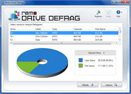
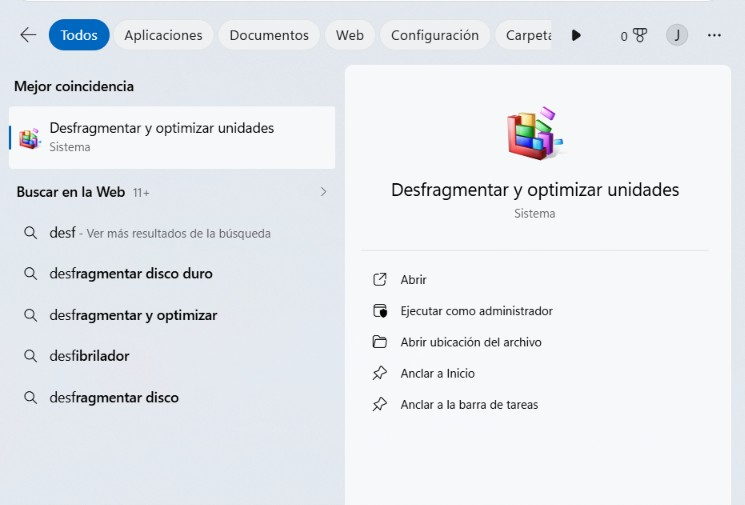
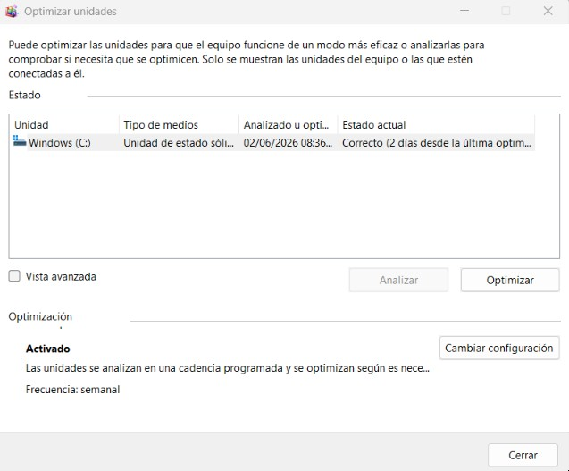
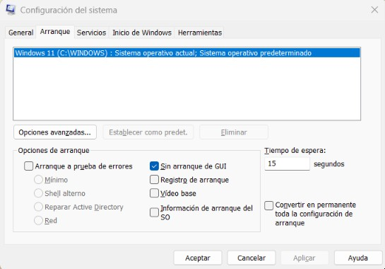
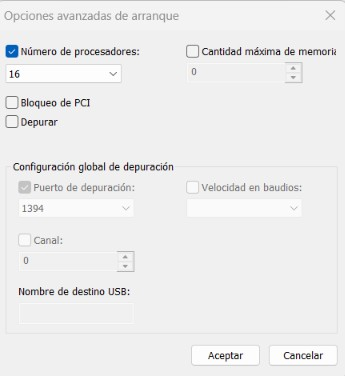
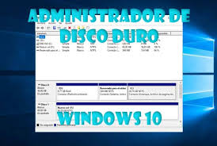
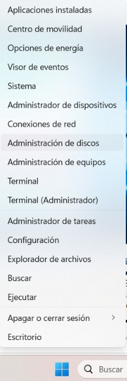
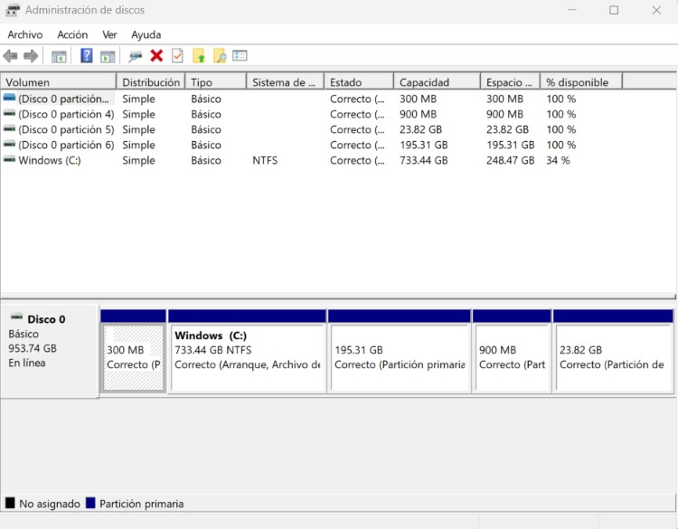
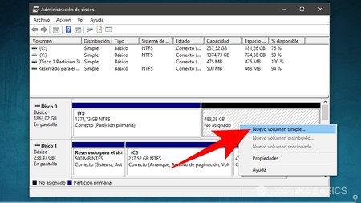

GUÍA VISUAL DE MANTENIMIENTO Y OPTIMIZACIÓN
Pasos esenciales para mejorar el rendimiento de tu computadora
1. Cómo Desfragmentar un Disco Duro (HDD)

- Presiona la tecla Windows y escribe "Desfragmentar y optimizar unidades".

- Selecciona la unidad de disco que deseas optimizar (usualmente el Disco Local C:).

- Haz clic en el botón "Analizar" para comprobar el estado de fragmentación.
- Haz clic en el botón "Optimizar" para iniciar el proceso.
⚠️ NOTA IMPORTANTE: Solo debes realizar este proceso en discos mecánicos (HDD). No desfragmentes unidades de estado sólido (SSD), ya que Windows los optimiza de forma automática mediante el comando TRIM y la desfragmentación tradicional puede reducir su vida útil.
2. Cómo Activar Todos los Núcleos del Procesador
- Presiona la combinación de teclas Windows + R, escribe
msconfig y presiona Enter.

- Dirígete a la pestaña "Arranque" y haz clic en el botón "Opciones avanzadas...".

- Marca la casilla "Número de procesadores".
- Selecciona en la lista desplegable el número máximo disponible.
- Haz clic en Aceptar, luego en Aplicar y reinicia tu equipo.
💡 DATO TÉCNICO: Windows administra de forma automática los núcleos según la carga de trabajo. Este ajuste se utiliza principalmente para forzar al sistema a usar la máxima capacidad desde el segundo exacto del arranque del sistema operativo.
3. Cómo Realizar una Partición de Disco

- Haz clic derecho sobre el botón de Inicio de Windows y selecciona "Administración de discos".

- Haz clic derecho sobre el disco principal y selecciona la opción "Reducir volumen...".

- Ingresa la cantidad de espacio que deseas asignar a la nueva partición (en MB) y haz clic en Reducir.

- Haz clic derecho sobre el espacio de color negro etiquetado como "No asignado" y selecciona "Nuevo volumen simple...".
- Sigue el asistente para asignar una letra de unidad y el sistema de archivos (se recomienda NTFS).
Soporte Técnico y Soporte de Sistemas • Guía de Procedimientos Rápidos